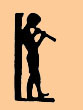

Rarely
outside of a large city can one find a school to compare with the
Bennett
Conservatory of Music, either in variety of instruction available, the
superior qualifications of the teaching staff, or the cultural
activities
sponsored by the school for the students, their families, and the
community.
This brochure attempts to outline what the Conservatory has to offer,
but
it cannot adequately convey the atmosphere of friendliness,
informality,
enthusiasm, and dedication in which this instruction takes place. It
can
only imply some of the unique advantages to the student which such a
school
can offer - the chance to see and hear such a variety of artistic
efforts,
to take part in coordinated artistic projects, to know that one's own
lesson
is a small but significant part of a group effort to make life richer
through
the enjoyment and the disciplines of art.
SCHOOL ACTIVITIES to which public is invited:
STUDENT-FACULTY RECITALS - First Sunday of December, March, and
May; second Sunday of
June.
2007-2008 CALENDAR
(pre-registration in June)
Registration begins ................... September 4
Fall Term ...............
September 10 - January 31
Spring Term
...................February 1 - June 26
Winter Recess..............
December 24 - January 1
Mid-Winter Recess
...................February 18-22
Spring Recess
......................... April 21-26
HOLIDAYS
Rosh Hashanah
..................... September 13-14
Columbus Day
............................ October 8
Thanksgiving ....................... November 19-21
Memorial Day ............................... May 26
SUMMER PROGRAM
Some teachers will continue instruction during the summer months.
Please
inquire in the office or call 271-4825
OFFICE HOURS
Monday - Friday 3-6 PM